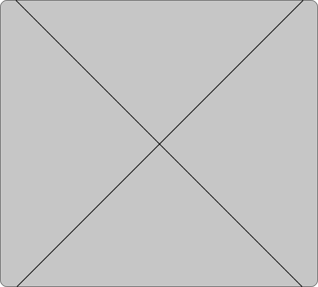

The freedom of the mind
This part of my site is where I share experimental projects, music, photography and aspects of my life that aren’t work related but will help you see the real me.
I'm a nerd, I chew gum and smoke in your face
Between 2016 and 2018 I’ve studied chemical engineering and realized I am very passionate about numbers, processes and chemistry. However, I took a pause from the career and focus on becoming a better designer and professional.
Someday I will resume my engineering studies just for fun and find out how to combine both disciplines.
I play music since I was 4
When I was younger I was fascinated by the idea of becoming a musician. Even though I never became a professional one, I like making music for myself and share it with friends and family.